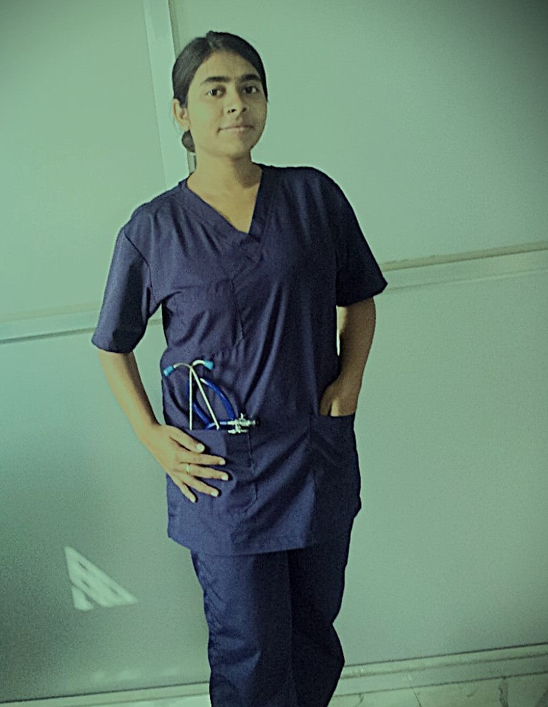

Specialized in Critical Care & Midwifery
Committed to delivering compassionate, evidence-based patient care with a focus on safety, dignity, and holistic healing across critical and maternity wards.

My journey into nursing began not just as a career choice, but as a calling. After completing my GNM Diploma from State Nursing School with distinction, I chose to specialize in Critical Care and Midwifery — two fields that require both technical precision and deep human empathy.
Over six years of hands-on experience in ICUs, labour wards, and emergency settings have shaped my belief that every patient deserves individualized, dignified care. I view nursing as a partnership — between healthcare providers, patients, and families — and I strive to be the calm, competent presence at the center of that partnership.
My philosophy: Treat the person, not just the condition.
A comprehensive skill set honed through years of clinical practice in high-stakes environments.
Proficient in peripheral and central venous access, blood sampling, and IV therapy administration.
Skilled in continuous cardiac monitoring, 12-lead ECG recording, and detecting arrhythmias in ICU settings.
Aseptic technique mastery for surgical, diabetic, and pressure wound management and post-operative care.
Strict adherence to 5-rights protocol for oral, IV, IM, and subcutaneous medications with zero error record.
Experienced in antenatal care, intrapartum monitoring, normal deliveries, and immediate newborn care.
Trained in surgical scrub techniques, instrument handling, and maintaining sterile field in the operation theatre.
A progressive career built on clinical excellence, continuous learning, and patient-centered care.
Formally recognized qualifications that validate my clinical expertise and professional standing.
General Nursing & Midwifery — First Class Distinction
West Bengal Nursing Council — Licensed Registered Nurse
Basic Life Support — American Heart Association
Advanced Cardiovascular Life Support — Emergency Protocols
Advanced Midwifery Practice — Labour & Delivery Specialization
Hospital Infection Control Practices — ICU Protocol Certified
All patient details are fully anonymized in compliance with data privacy regulations.
A 58-year-old male patient in the post-cardiac surgery ICU showed sudden signs of haemodynamic instability during night shift. Recognizing early warning signs — falling SpO₂, erratic ECG trace, and rising lactate — I immediately activated the rapid response team, initiated emergency protocol, and provided continuous ventilator support, preventing deterioration into cardiac arrest.
During a night shift, a primigravida patient with gestational hypertension experienced a prolonged second stage of labour. I provided continuous fetal heart rate monitoring, repositioned the patient for optimal fetal descent, administered IV fluids per protocol, and maintained calm communication. I coordinated timely escalation to the senior obstetrician, resulting in a safe normal delivery.
After noticing an increase in catheter-associated infections, I proposed and led a structured CAUTI prevention bundle in the ICU — including daily catheter necessity reviews, correct insertion technique reinforcement, and staff education sessions. The initiative, implemented over 3 months, led to a measurable decrease in hospital-acquired infection rates.
A recently diagnosed Type 2 diabetic patient was repeatedly readmitted due to poor medication compliance and diet management. I developed a simple, illustrated patient education handout in Bengali, conducted bedside counseling sessions, and coordinated with the dietician. On 3-month follow-up, the patient reported improved glycemic control and no further emergency readmissions.
Whether you're a recruiter, a healthcare organization, or a private care agency — I'd love to connect.
I am currently open to full-time staff nurse positions in ICU/CCU, maternity ward, or private clinical settings — in West Bengal and across India.